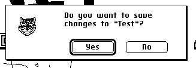
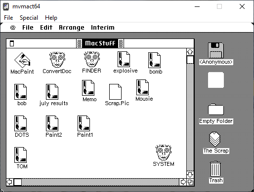
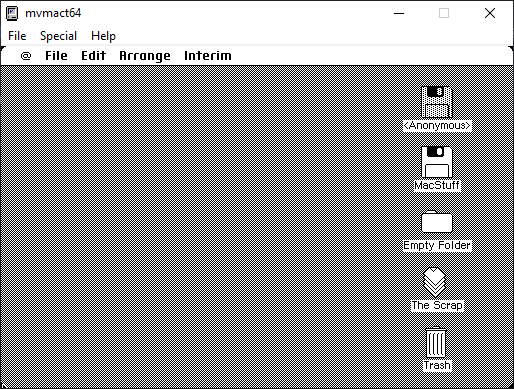
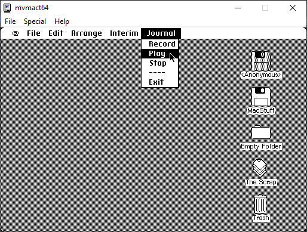
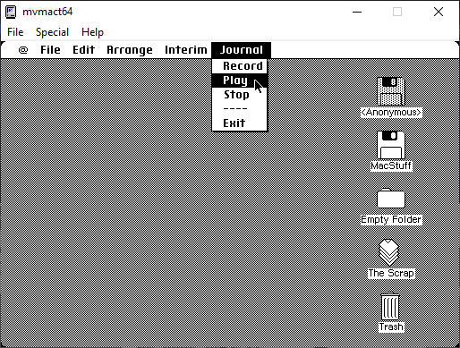

MARCHintosh 2023
Sinclair-Speccy: "Oh hey it's the 1st of
March"
My friend: "Nice! Looking forward to Marchintosh?
👀"
In hindsight, no, I was not looking forward to it. I had
no actual Apple computer running macOS or a classic Mac
anywhere in my house to even partake for MARCHintosh.
What is MARCHintosh?
As an extract from the official MARCHintosh site:
With the success of such events as DOScember and
SEPTandy, why shouldn't the Macintosh retrocomputing
community have their own month to share their passion for
classic Macintosh computers? MARCHintosh has been an
exciting online event since its creation in 2021. We're
excited to continue this tradition in 2023!
And that's where you come in...
We're asking that content creators from all
communities and platforms - even folks who don't normally
produce Macintosh retrocomputing content - work together to
help spread the word about #MARCHintosh - a month-long
event starting on Wednesday, March 1st, 2023.
I had no plans to partake in MARCHintosh at all until on
the 7th of March I remembered the Twiggy Mac prototype
existed and could be emulated...
The Twiggy Mac and Sony Test pre-release
version of System 1
Trying to emulate this stuff isn't too hard. You can
grab the files for emulation from Toasty
Tech.

This is the Sony Test version. I didn't get many
screenshots of this as it was not very
interesting.

Mac Paint that came with the Twiggy Mac
stuff.

I wonder what the context of the cat person is
for.

Trying to exit it would crash the Mac, lol.
  

More screenshots for #MARCHintosh of the Twiggy Mac
:)

 

There seems to be a thing called "journal" but I am
unsure on what it does. It has "Record", "Play" and "Stop"
along with "Exit" but trying to click any of them seems to
crash the machine.
Why is not not a review post? Not really worth a review
noting that I have so few screenshots plus Toasty Tech has
a better review of both the Sony Test and Twiggy Mac.